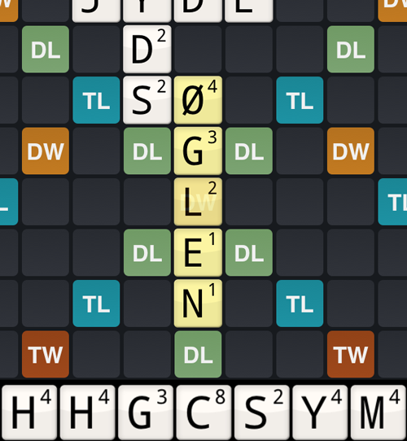
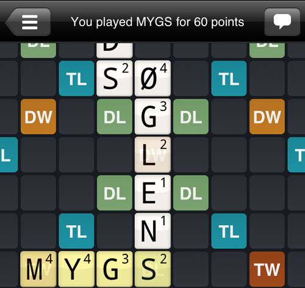

Modsat hvad mange tror i begyndelsen, så er det ikke den der kan spille de fleste lange ord der vinder i Wordfeud. Det er naturligvis en fordel at kunne spille et ord som JACUZZI og score masser af point, men det er ofte andre teknikker der er afgørende for at vinde. Her vil jeg demonstrere nogle af disse.
Bonusfelterne er altafgørende for at vinde. Du skal forsøge at lave så mange ord på TW felter som muligt. Ikke kun fordi du selv scorer mange point herved, men også fordi du derved hindrer din modstander i at bruge en af disse meget værdifulde felter. Når dit ord overlapper bonusfelter bør du også altid overveje om ordet lige kan bøjes lidt anderledes så du får placeret bogstaver med højere værdi på bonusfelterne.
Bonusfelterne kan kombineres, så hvis du kan lave ord der er lange nok eller spiller i Random Board, kan du fx. kombinere en TW og en DW for at få 6 gange point for dit ord.
Bonusfelterne tæller 2 gange, hvis du laver et ord både vandret og lodret igennem feltet i samme tur. Det betyder fx. at du får 6 gange point for et TW eller TL hvis du gør dette.
Forsøg at få de bogstaver du spiller til at spille i flere retninger. Reglerne for et lovligt træk i Wordfeud er an af de nye brikker skal røre en eksisterende brik, alle spillede brækker skal enten være i samme række vandret eller lodret, og at alle nye dannede ord skal være lovlige. Dette giver nogle lidt overraskende spillemuligheder som kan give rigtigt mange point, fordi du laver nye ord i mere end en retning. Den første jeg vil vise er forlængelse på tværs, hvor man udvider et ord med et bogstav og derefter fortsætter på tværs. Derved får man point både for det nye ord på tværs og hele det ord man har udvidet.
I dette eksempel har modstanderen netop spillet ØGLEN og derved scoret 28 point.
Der er dog to ting som vi kan udnytte her til at komme godt igen og slå dette træk. For det første er vi nu indenfor rækkevidde af en af de to TW felter, hvis vi kan finde et ord der er langt nok. For det andet har vi mulighed for at udvide ØGLEN med et bogstav i enden og derved få hele ordet til at tælle en gang til. Utroligt mange ord kan forlænges med S på enden, og ØGLEN er ingen undtagelse. Vi starter derfor med at ligge et S og får ØGLENS. Derefter skal der findes et ord der kan forlænges ud til en af de to TW'er og helst et med så mange dyre bogstaver. Jeg ender med finde MYGS, som indeholder M og Y på 4 point, og G på 3.
Med dette træk henter vi hele 60 point hjem. MYGS er 13 point værd normalt. S'et ligger dog på en DL, så derved bliver det til 15. Det tripples op til 45. Fordi vi forlængede ØGLEN til ØGLENS skal vi dog også have point for alle felterne i dette ord. ØGLENS er 13 point værd, men igen ligger S'et på DL og tæller derfor en gang til. Vi får samlet 15 point for ØGLENS og dermed ender summen på 60. Dette er naturligvis ikke et træk man kan spille så tit, men det viser hvordan teknikkerne ovenfor kan kombineres til nogle højt scorene træk.
Det er også lovligt at spille et ord langs et eksisterende ord i stedet for ud fra det. Kravet er dog at alle de ord der herved skabes er lovlige. De fleste af disse vil være korte ord på 2 og 3 bogstaver, så for at blive god til denne teknik kan jeg anbefale at lære nogle af ordene i listerne med 2 og 3 bogstaver udenad.
Her er der et åbent P lige ved siden af et TL og vi har et C, så der er mulighed for at score en af de klassiske C ord, PC, og få hele 28 point.

Derved har vi dog kun lavet en almindelig udvidelse og scoret i en retning. I denne situation bør du forsøge at få en retning mere på og se om du kan gøre det endnu bedre. Bemærk at vi også har et D. CD er et andet godt kort ord med C. Ved at spille dette på tværs får vi point for begge ord. Men her bliver det interessant, for ved at lægge D under C danner vi også ordet OD. Dette er også et lovligt ord og vi får derfor point for hele 3 ord.

Da C'et ligger på TL får vi 6 gange point for det ialt. Vi får 28 point for PC, 26 point for CD og 4 point for OD. Sammenlagt er vi oppe på hele 58 point. Derved har vi fået mere end dobbelt så mange point som hvis vi var stoppet ved PC!
Denne teknik kan også bruges med endnu længere ord, så længe alle de dannede ord er korrekte.